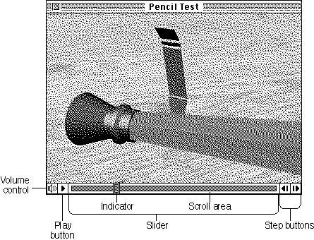
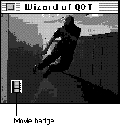

About Movie Controller Components
Movie controller components provide movie playback and editing capabilities to applications. In so doing, movie controller components remove from your application much of the burden of presenting an interface for movie playback and editing. It is possible to have the controller do nearly all the work involved with playing movies, including updating and idling. Alternatively, your application can take care of some or all of these tasks.You can think of movie controller components in terms of more familiar Macintosh controls. Movie controller components, in addition to handling update, activate, and mouse-down events, also know how to interact with the data that they control. Consequently, the movie controller components can actually perform the commands requested by users (the controls handled by the Control Manager merely report user actions to your application). In this way, your application is relieved of much of the work of controlling movies. Furthermore, movie controller components can be updated to provide improved functionality with no impact on your application.
Movie controller components have a component type value of
'play'. You can use the following constant to specify this value.#define MovieControllerComponentType 'play'Apple has defined the functional interface that is supported by movie controller components so that you can create a wide variety of movie controls. For example, you could create a control that is separate from the movie image. Consequently, the interface is a bit more complex than might seem necessary for simple controls that support only playback. For details on the functions that your component must support, see "Movie Controller Components Reference," which begins on page 2-14.The Elements of a Movie Controller
The movie controller component provided with QuickTime by Apple provides control elements for regulating sound, starting, stopping, pausing, single-stepping (forward and backward), and moving to a specified time. Figure 2-1 shows the controls supported by Apple's movie controller component. If the user resizes the controller so that there is not enough space to display all the individual control elements, the movie controller component eliminates elements from the display. Note that this controller allows the user to start and stop the movie by clicking the movie image itself. This is an important feature, because it allows the user to control the movie even in circumstances where no control elements are visible.Figure 2-1 The standard movie controller

The movie controller presented by Apple's movie controller component contains a number of individual controls, as shown in Figure 2-1. These controls include:
- A volume control. This control allows the user to adjust the sound volume--holding down the mouse button while the cursor is on this control causes the controller to display a slider that allows the user to change the sound volume while the movie is playing (if a movie does not have any sound, the movie controller component disables the volume control).
- A play button. This control allows the user to start and stop the movie. Clicking the play button causes the movie to start playing; in addition, the movie controller component changes the play button into a pause button. Clicking the pause button causes the movie to stop playing. If the user starts the movie and does not stop it, the movie controller plays the movie once and then stops the movie.
- A slider. This control allows the user to quickly navigate through a movie's contents. Dragging the indicator within the slider displays a single frame of the movie that corresponds to the position of the indicator. Clicking within the slider causes the indicator to jump to the location of the mouse click and causes the movie controller component to display the corresponding movie data.
- Step buttons. These controls allow the user to move through the movie frame by frame, either forward or backward. Holding the mouse button down while the cursor is on a step button causes the movie controller to step through the movie, frame by frame, in the appropriate direction.
Badges
The movie controller component supplied by Apple allows your application to distinguish movies from static graphics in documents by the use of a badge. A badge is a visual element that the movie controller can display as part of a movie when the
other controls are not visible and the movie is not playing. Figure 2-2 shows a movie with a badge.Figure 2-2 A movie with a badge

The badge lets the user know that the image represents a movie rather than a static image. A badge appears under the following conditions:
When the user double-clicks the movie, the movie starts playing and the badge disappears; a single click stops the movie, and the badge reappears. When the user clicks the badge itself, the movie controller component displays the controls, as shown in Figure 2-1.
- the movie is in badge mode--that is, the
mcActionSetUseBadgemovie controller action was called with a value oftrue- the movie is not playing
- the movie controller is hidden
Your application can control whether the movie controller component displays a badge with a movie. Use the
NewMovieControllerfunction (described on page 2-28) to create a new controller.
Subtopics
- The Elements of a Movie Controller
- Badges